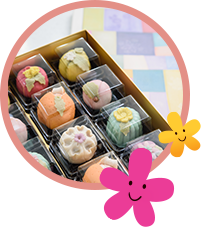
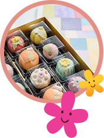
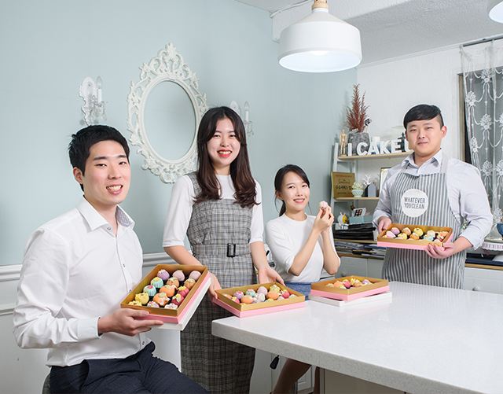
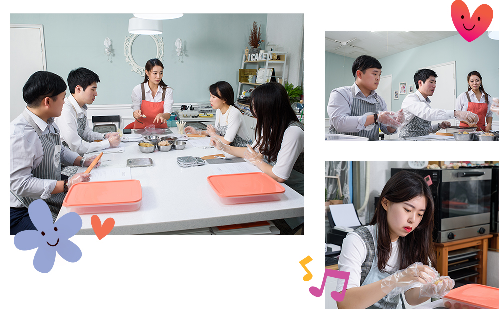
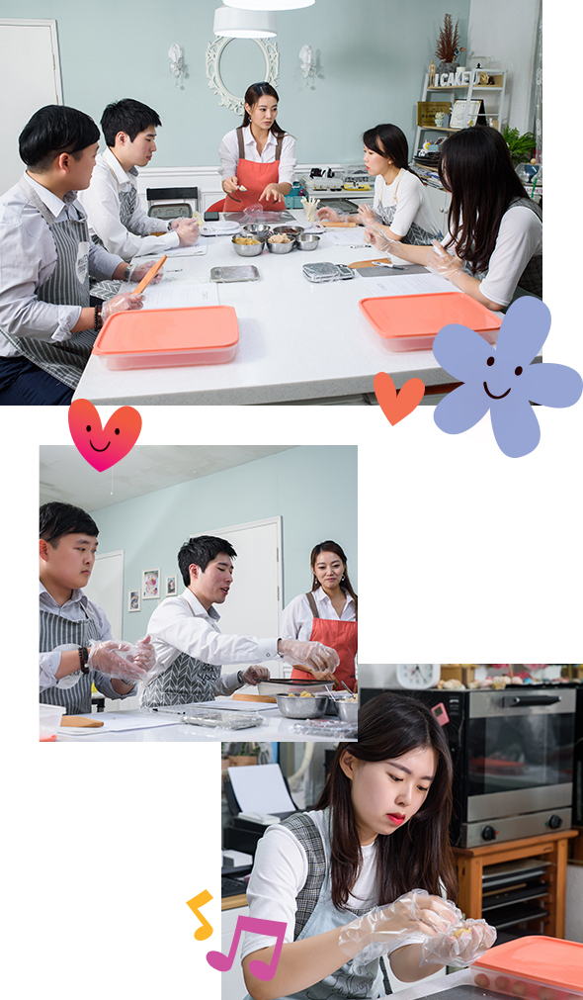
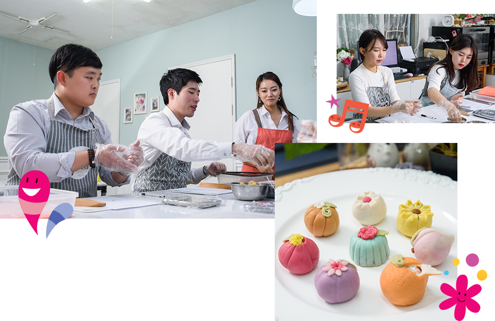
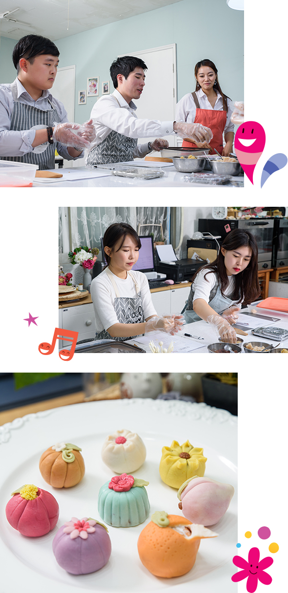
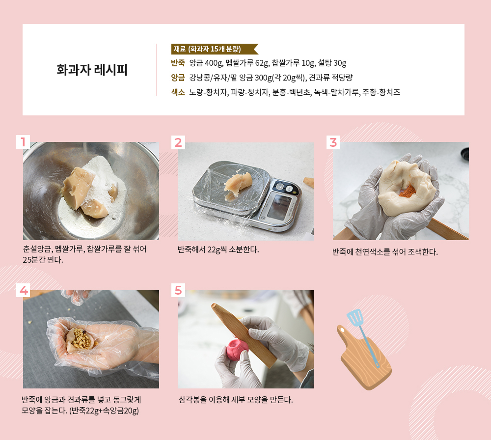
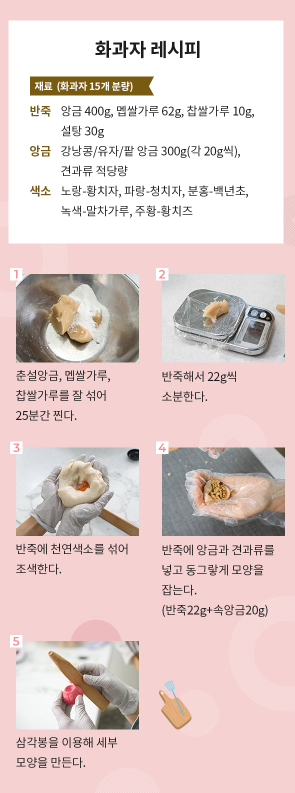

와 제 롤모델이 잡스에요!!! 아이폰 첫 출시되고 나서부터 계속 아이폰 쓰고 있는데 잡스가 너무 그리워요ㅠㅠ 지금은 돈만 벌려고 하는 것 같아서 디자인 발전도 없고ㅠㅠ와 제 롤모델이 잡스에요!!! 아이폰 첫 출시되고 나서부터 계속 아이폰 쓰고 있는데 잡스가 너무 그리워요ㅠㅠ 지금은 돈만 벌려고 하는 것 같아서 디자인 발전도 없고ㅠㅠ와 제 롤모델이 잡스에요!!! 아이폰 첫 출시되고 나서부터 계속 아이폰 쓰고 있는데 잡스가 너무 그리워요ㅠㅠ 지금은 돈만 벌려고 하는 것 같아서 디자인 발전도 없고ㅠㅠ와 제 롤모델이 잡스에요!!! 아이폰 첫 출시되고 나서부터 계속 아이폰 쓰고 있는데 잡스가 너무 그리워요ㅠㅠ 지금은 돈만 벌려고 하는 것 같아서 디자인 발전도 없고ㅠㅠ와 제 롤모델이 잡스에요!!! 아이폰 첫 출시되고 나서부터 계속 아이폰 쓰고 있는데 잡스가 너무 그리워요ㅠㅠ 지금은 돈만 벌려고 하는 것 같아서 디자인 발전도 없고ㅠㅠ
오! 해피데이


원데이 화과자 만들기 클래스
달콤한 꽃 한입 머금고
“오, 해피!”

‘첫 맛은 눈으로, 끝 맛은 혀로 즐긴다’는 말이 있을 정도로 화려한 모양을 뽐내는 화과자는 예쁜 모양에 한 번, 쫀득한 식감과 앙금의 특별한 맛에 또 한 번 놀란다. 한 입 베어 무는 순간 고명으로 올린 꽃잎도 한 잎 한 잎 사르르 녹아내리는데, 그 달콤한 맛을 음미하다 보면 어느새 입가에도 꽃이 활짝 핀다.
‘첫 맛은 눈으로,
끝 맛은 혀로 즐긴다’는 말이 있을 정도로
화려한 모양을 뽐내는 화과자는
예쁜 모양에 한 번,
쫀득한 식감과 앙금의 특별한 맛에
또 한 번 놀란다.
한 입 베어 무는 순간
고명으로 올린 꽃잎도 한 잎 한 잎
사르르 녹아내리는데,
그 달콤한 맛을 음미하다 보면
어느새 입가에도 꽃이 활짝 핀다.
글윤진아
사진김선재
촬영 협조아이케이크유
입도 눈도 즐거운 화과자 만들기
강낭콩, 백년초, 멥쌀가루, 말차가루 등등 몸에 좋은 온갖 재료가 모였다. 천연 식재료로 색을 내고, 앙금소 또한 영양 그 자체인 화과자는 특별한 날 소중한 사람에게 선물하기 좋은 프리미엄 디저트이다. 화과자 반죽은 찹쌀가루와 쌀가루, 밀가루, 설탕을 기본으로 하고 팥고물, 콩고물, 깨, 물엿 등을 넣어 모양을 빚는다. 꽃, 과일, 동물 모양은 각각 장수와 건강, 복을 기원하는 의미가 담겨 있다.
“화과자의 주재료는 백앙금인데, 흰강낭콩을 삶아 으깬 뒤 당 처리를 해 단맛이 많이 나요. 천연색소로 조색하면 몸에도 이롭고, 추출한 재료 고유의 향과 맛을 함께 느낄 수 있지요. 중요한 건 처음부터 많은 양을 넣지 않고 조금씩 여러 번 넣으며 원하는 색을 만들어나가야 한다는 겁니다.”
강사가 전수한 화과자 잘 빚는 요령은 ‘야무진 손끝으로 정성을 다하는 것’이다. 양 손바닥으로 동글동글 둥글려 모양을 잡을수록 대칭이 잘 맞는 동그란 화과자가 만들어진다. 반죽에 앙금을 넣고 이음새를 붙이면 자국이 남는데, 이때 양손으로 충분히 반죽을 둥글려야 흔적 없이 말끔한 화과자가 완성된다. “팔이 좀 아프더라도 오래 둥글리는 게 중요하다”는 강사의 말이 끝나기가 무섭게 네 도전자가 의욕적으로 두 소매를 걷어붙였다.


귤 향기 솔솔~ 동글동글 정성을 빚어요!
반죽을 찌는 찜기에서 하얀 김이 오르고 고소한 냄새가 공방을 가득 채운다. 먹기 좋은 크기로 반죽을 빚고, 색과 농도를 맞추고, 고명을 올리고, 삼각봉으로 반죽을 누르는 도전자들의 손길이 점차 노련해진다.
껍질을 살짝 벗긴 귤 화과자에 초록색 나뭇잎 고명을 올리는 조슬옹 사원의 손이 부들부들 떨린다. “이게 뭐라고 이렇게 긴장이 되는지 모르겠다”며 고개를 절레절레 흔드는 조슬옹 사원 때문에 또 한 차례 웃음꽃이 번졌다. 만들다 보면 기분까지 새콤달콤해지는 귤 화과자는 예쁜 만큼 손도 많이 간다. 천연색소를 넣은 반죽을 동그랗게 빚은 다음, 앙금을 올리고 잘 오므려 감싸준다. 삼각봉을 이용해 동그란 반죽을 살짝 눌러주면 탐스러운 귤 모양이 나타난다. 여기에 반죽 표면을 이쑤시개로 콕콕 찍으면 금방이라도 과즙이 뚝뚝 떨어질 것 같은 싱크로율 100%의 귤껍질을 재현할 수 있다.


손끝에서 탄생한 알록달록 화과자
봄날의 장미와 벚꽃, 가을을 아름답게 수놓은 국화 모양의 화과자가 차례차례 완성되고, 각자의 개성을 담은 빨갛고 파랗고 노란 꽃들이 활짝 피었다. 4명의 손끝에서 탄생한 화과자를 한 데 모아놓고 보니 꽃밭이 따로 없다. 얼렸다가 먹어도 맛이 달라지지 않는 화과자는 2주까지 냉동 보관이 가능해서 미리 만들어 두었다가 선물하기에도 좋다. 하나하나 공들여 만드는 만큼 시간이 조금 걸리지만, 마침내 완성된 종합선물세트를 바라보는 만면에 뿌듯함이 고인다. 옹기종기 모여 앉아 은근과 끈기로 꽃을 피워낸 네 사람. 이들을 마주 보게 하는 이 곳, 함께여서 더 행복한 식탁에서 이들은 진심을 담아 음식을 만들며 마음을 나누는 법을 배우는 참이다.
Mini Interview
-
김연강 사원컨테이너운항팀추석에 무거운 두 손으로 고향에 방문하고자 친구와 같이 지원했는데, 인원 제한으로 저만 참석하게 되었습니다. 친구가 절반의 지분을 요구해 흔쾌히 그러자고 했는데, 다 만들고 나니 반은 너무 많다는 생각이 드네요.(웃음) 친구, 동료, 가족 모두와 나눠 먹고 싶을 만큼 완벽한 디저트이기에 조만간 한 번 더 빚어야 할 것 같네요. 하하!
-
김채린 사원컨테이너Key Account영업팀제가 그리 꼼꼼한 성격이 아닌데, 워낙 섬세한 작업인 만큼 오랜만에 집중한 것 같아요. 할머니에게 손녀딸이 손수 만든 맛있는 화과자를 선물하려고요. 몸에 좋은 재료를 조금이라도 더 담고자 앙금과 견과류를 꽉꽉 채워 넣었어요. 제 사랑을 눌러 담은 화과자를 가운데 놓고, 가족과 함께 단란한 시간을 보낼게요!
-
조경아 사원남북영업관리팀이렇다 할 취미 없이 회사와 집만 왕복하던 삶에 변화를 주고자 최근 컬러링북, 식물 기르기 등 다양한 활동을 시작했는데요. 화과자 만들기라는 신세계에 입성한 지금, 말 그대로 “오, 해피!”입니다. 몇 달 남은 올해는 선물상자 속 알록달록 화과자처럼 제가 하는 일 모두 다채롭고 풍성하게 만개하길 바랍니다.
-
조슬옹 사원인재경영팀많은 정성과 시간을 쏟아야 했지만, 노력한 만큼 기대 이상의 작품이 나와 뿌듯합니다. 국화, 벚꽃, 장미, 귤 등등 사계절과 자연을 음식에 담는다는 발상도 참 멋진 것 같아요. 마음처럼 형태가 안 잡혀 재미있으면서도 스트레스를 꽤 받았는데요. 다들 소중한 사람에게 선물한다는데, 저는 수고한 저에게 당장 오늘 밤 맥주 안주로 선물하려고요.(웃음)


#Tag
- #아크릴화원데이클래스 #신슬미 #이지헌 #홍성범 #하지윤
-
최고예요
322
-
좋아요
322
-
슬퍼요
322
-
그저 그래요
322
-
화나요
322